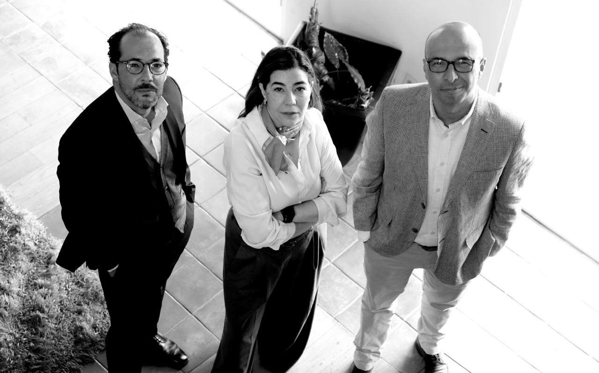
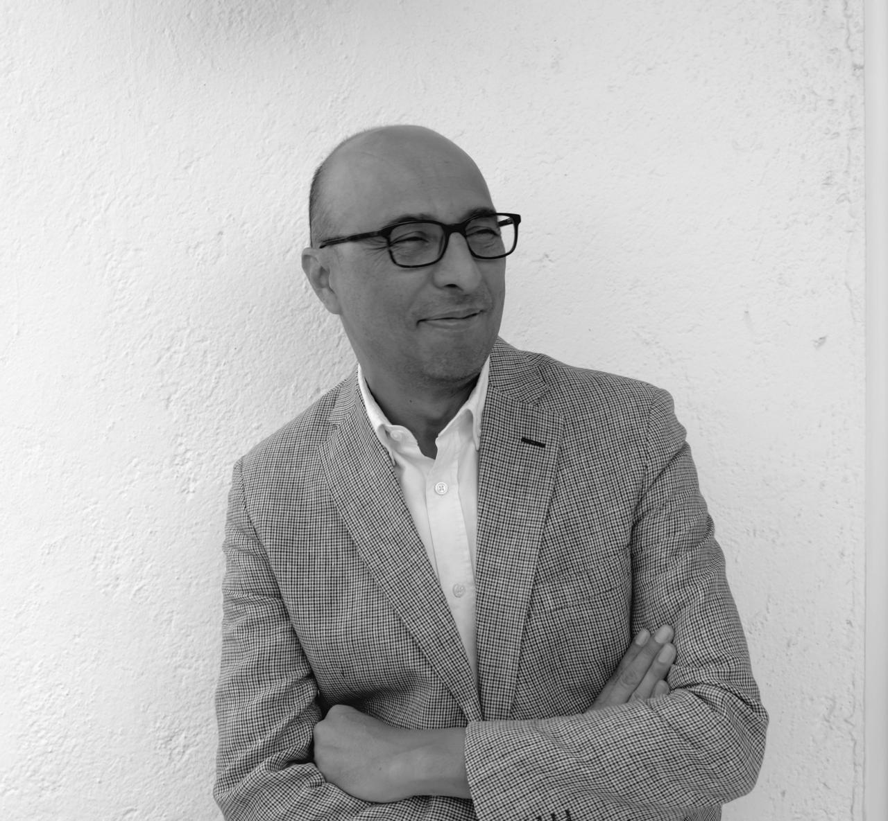
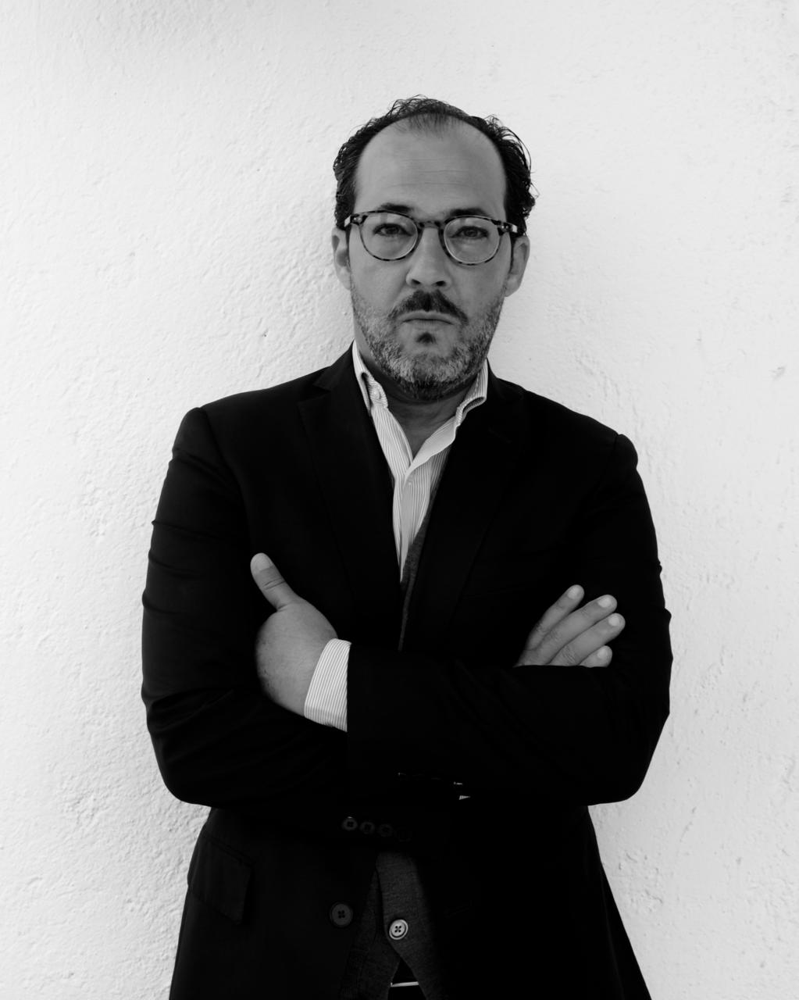

Misión
La misión de 360Justicia es contribuir a una sociedad donde la
inclusión y la pluralidad sean principios reales y cotidianos,
sustentados por la integralidad, la innovación y el comromiso
con la justicia. 360Justicia nace de la convicción de que la
justicia comienza con el reconocimiento del otro. Su propósito
es impulsar una mirada integral a favor de la inclusión y por el
libre desarrollo de la personalidad.
El nombre expresa la idea de una justicia total: una perspectiva
de 360 grados sobre la inclusión, la dignidad y la igualdad. Por
ello, se ocupa de todos estos temas desde el litigio, la
consultoria y el compliance, la academia y la capacitación, así
como, desde la difusión de las ideas y la cultura de la
pluralidad.
Valores
La marca 360Justicia sintetiza los valores que orientan su
acción: la justicia con perspectiva de inclusión, igualdad,
pluralidad, razonabilidad, integralidad, conocimiento, impacto e
innovación. 360Justicia busca transformar entornos donde todas
las personas puedan participar, pertenecer y ser reconocidas en
su dignidad.
Sentido y Visión de 360Justicia
360Justicia ofrece una visión integral que abarca acción,
estrategia, transformación y reflexión. Transformar el Derecho
en una herramienta activa a favor del pluralismo y la inclusión.
360Justicia acompaña instituciones, comunidades y personas en la
creación de espacios donde la diferencia no sea motivo de
exclusión, sino fuente de valor y aprendizaje con el propósito
de transformar nuestros entornos, favoreciendo la pluralidad de
valores.
Quiénes somos
Somos tres los socios fundadores de 360Justicia (dos de ellos
actualmente actuando únicamente como miembros de nuestro Consejo
Asesor), contamos con un amplio grupo de especialistas en todas
las áreas a las que nos dedicamos.

Alfonso García Castillo
Socio Fundador, miembro del Consejo Asesor
Click para leer más ▾
Geraldina González de la Vega Hernández
Socia Fundadora, miembra del Consejo Asesor
Click para leer más ▾

René González de la Vega
Socio Fundador y Director General
Click para leer más ▾
El Maestro García Castillo es abogado especializado en derechos humanos, con más de veinte años de experiencia en la defensa, promoción y protección de derechos fundamentales desde diversos ámbitos. Ha trabajado para organizaciones de la sociedad civil, como Amnistía Internacional y el Centro de Derechos Humanos Fray Francisco de Vitoria, así como en organismos públicos autónomos e instituciones gubernamentales, entre ellos, la Comisión de Derechos Humanos de la Ciudad de México y el Consejo para Prevenir y Eliminar la Discriminación de la Ciudad de México (COPRED).
La Maestra González de la Vega Hernández es abogada, especialista en derechos humanos, género y no discriminación. Cuenta con más de veinte años de experiencia en el diseño e implementación de políticas públicas, estrategias jurídicas y programas educativos orientados a la igualdad sustantiva. Ha liderado procesos de transformación institucional y social desde el ámbito público y académico, y ha contribuido a avances clave en el reconocimiento de los derechos de las personas LGBTIQ+ y de las mujeres en México y América Latina. Desde el 2018 es Presidenta del Consejo para Prevenir y Eliminar la Discriminación de la Ciudad de México.
El Dr. González de la Vega es abogado y filósofo con una destacada trayectoria en el ámbito jurídico, académico y gubernamental. Doctor en Filosofía por la Universidad Católica de Lovaina y con maestrías en Teoría y Filosofía del Derecho (Academia Europea de Teoría del Derecho, Bruselas) y en Filosofía del Derecho, Moral y Política (Universidad de Alicante). En el sector público ha ocupado cargos de alta responsabilidad, entre ellos, Director General de la Unidad de Gobierno en la Secretaría de Gobernación y Diplomático en la Embajada de México en los Países Bajos.
En su calidad de Director General de 360Justicia, lidera un proyecto de consultoría jurídica orientado a la construcción de instituciones justas, inclusivas y racionalmente fundamentadas.